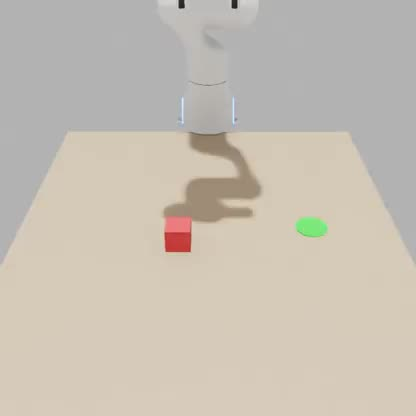
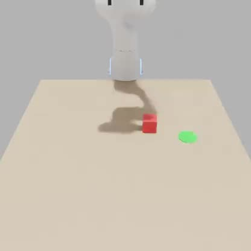
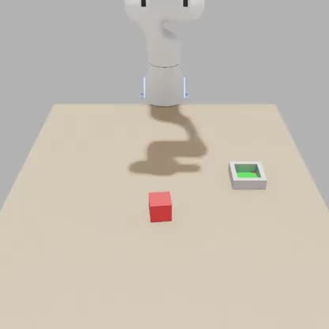
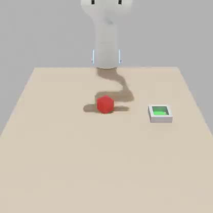
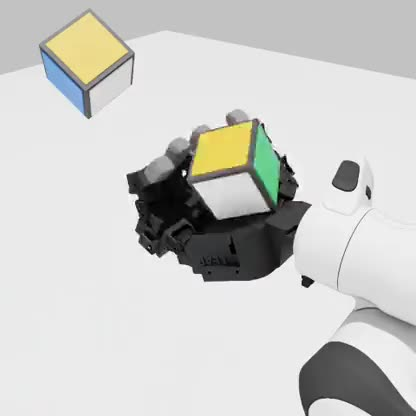
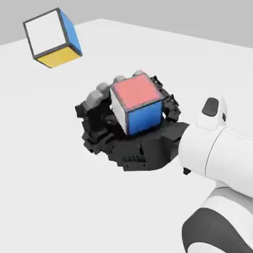
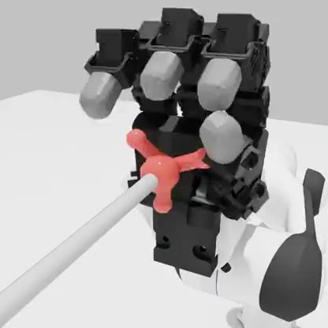
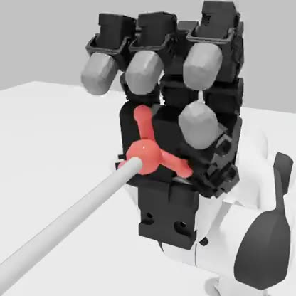
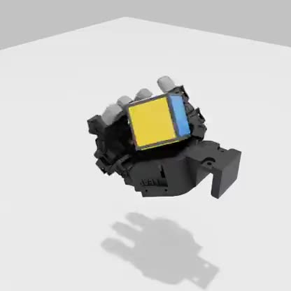
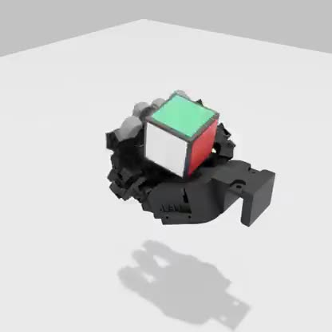

Each task in the target environment (Isaac Lab PhysX): the zero-shot policy on the left, the agent’s final policy on the right. The percentages are success rates on 25 held-out initial states. Click a task to watch it on repeat.
A policy trained in simulation can perform far worse on a real robot. Domain randomization and system identification narrow this gap, but a researcher still has to decide which parameters to randomize or estimate. We ask whether an LLM agent can take over part of that work by reasoning about the physics the way a researcher would: comparing paired rollouts, writing down a diagnosis, and only then changing the simulator or the policy.
The true gap of a physical robot is unknown, so we study the question in 8 controlled sim-to-sim tasks. MuJoCo is the agent’s source simulator and Isaac Lab with PhysX stands in for the real environment. The engines differ in contact dynamics, and in 7 tasks we also changed a parameter of the PhysX setup and hid the change from the agent. Within a budget of 20 to 30 episodes per task, the agent must state a diagnosis after every deployment before it edits anything. We then score two things separately: whether the final policy beats the zero-shot one, and whether the final diagnosis identifies the hidden change. One does not imply the other.
All experiments are simulated. MuJoCo is the agent’s source simulator and Isaac Lab with PhysX stands in for the real robot. The two engines differ in contact dynamics, and in 7 of the 8 tasks we also changed one or two parameters of the PhysX setup without telling the agent.
The eight tasks, before and after the agent
For each task, the zero-shot policy on the left and the agent’s final policy on the right, both in PhysX on one of the scored initial states. The percentages are success rates on the 25 held-out states. Under each pair, the agent’s final diagnosis, quoted from its run.
“Lower sliding friction between puck and table on the real system: the puck decelerates ~2.9× less after release, about 0.34× nominal.”final diagnosis · true change: puck friction ×0.25
PhysX · real world

zero-shot policy real time28%PhysX · real world

after the agent real time100%
PickPlace · camera roll 3.0°, shift 18 mm28% → 100% on 25 held-out starts
“The real camera’s position or angle differs from what the perception software assumes: reported cube positions are shifted by about −0.6 cm in x and −2.2 cm in y.”final diagnosis · true change: camera roll 3.0°, shift 18 mm
PhysX · real world

zero-shot policy real time24%PhysX · real world

after the agent 2× speed100%
Insert · cube mass ×8.324% → 100% on 25 held-out starts
“The real cube is most likely heavier than the simulated one, roughly 2–4×. I can’t measure mass directly, so the number is a rough estimate.”final diagnosis · true change: cube mass ×8.3
“The arm’s joint motors are weaker than in the simulator: roughly 0.4–0.6× the nominal stiffness.”final diagnosis · true change: servo ×0.6 and damping ×2.5; the damping was not named
PhysX · real world

zero-shot policy 2× speed36%PhysX · real world

after the agent 2× speed76%
Reorient · cube mass ×2.536% → 76% on 25 held-out starts
“The cube on the real robot has 2.5× the mass and inertia of my simulator’s cube: measured directly, not fitted.”final diagnosis · true change: cube mass ×2.5
PhysX · real world

zero-shot policy 2× speed0%PhysX · real world

after the agent 2× speed100%
Valve · hinge damping ×30% → 100% on 25 held-out starts
“The real valve is about three times more viscously damped than my simulator’s: point estimate 3.15.”final diagnosis · true change: hinge damping ×3
PhysX · real world

zero-shot policy 2× speed0%PhysX · real world

after the agent 2× speed92%
Spin · none, the engine alone · ✗ misattribution0% → 92% on 25 held-out starts
“The cube’s sliding friction coefficient is roughly 3–4× higher on the real robot than in my simulator.”✗ final diagnosis · no parameter was changed; the friction coefficient is the same in both engines
“The two gripper position servos have about 40% of the simulated stiffness: setting it to 0.4 made the sim finger trajectory match the real one digit-for-digit.”final diagnosis · true change: gripper servo ×0.4
How it works
The agent can evaluate policies in MuJoCo, change simulator parameters, and update policies. It deploys batches of 3 to 10 episodes in PhysX, within a total budget of 20 to 30 per task, and each episode is paired with a simulated one from the same initial state. It may also run open-loop replays and diagnostic probes that send identical commands to both worlds. After each deployment it has to state a diagnosis: candidate causes with an estimated direction, magnitude and confidence, or discrepancies it cannot explain. Only then may it change the simulator or the policy.
PhysX (real world)
Strikepuck friction ×0.25PickPlacecamera roll 3.0°, shift 18 mmInsertcube mass ×8.3Pushservo ×0.6, damping ×2.5Reorientcube mass ×2.5Valvehinge damping ×3Spinnone (engine only)HandOvergripper servo ×0.4
Setup. The agent compares MuJoCo and PhysX rollouts and records a diagnosis before it revises the simulator or the policy. PhysX has different physics and, in 7 tasks, a hidden parameter change. Right: the 8 tasks in PhysX under the zero-shot policy, each with its hidden change. Spin has none; there only the engines differ.
Results
The final policies improve on all 8 tasks and raise mean success from 19.0% to 91.5%. In all 7 tasks with a hidden change the final diagnosis identifies the changed parameter, except on Push, where it finds only one of the two (the actuator gain, not the damping). The estimates are within 5% of the true values on Reorient, Valve and HandOver. On Insert the agent estimates 2 to 4 times the mass rather than 8.3, and still reaches 100%. On Spin, where only the engines differ, it reaches 92% but blames a friction coefficient that is the same in both engines.
Task
Hidden change
Zero-shot
Final
Final diagnosis
Table 1 of the paper. Success (%) of the zero-shot and final policies on 25 held-out initial conditions per task, and our judgement of the final diagnosis: ✓ correct · ✓ partially correct · ✗ wrong.
One trial, step by step
Pick a task. The two panes show the agent’s MuJoCo simulator and the paired PhysX episode from the same initial state. The log on the right is the agent’s own trace, and the panel under the clips shows the evidence behind each step.
Success without a correct diagnosis
On Spin nothing was changed; only the engines differ. The agent concluded that cube friction was “roughly 3-4x higher on the real robot” and reached 92% by randomizing friction over 1.1 to 1.7 during training (nominal 0.3). The configured friction coefficient was the same in both engines. The agent found an intervention that works while misidentifying the cause. A simulator parameter acted here as a compensatory control for the model mismatch, not as an estimate of a physical property.